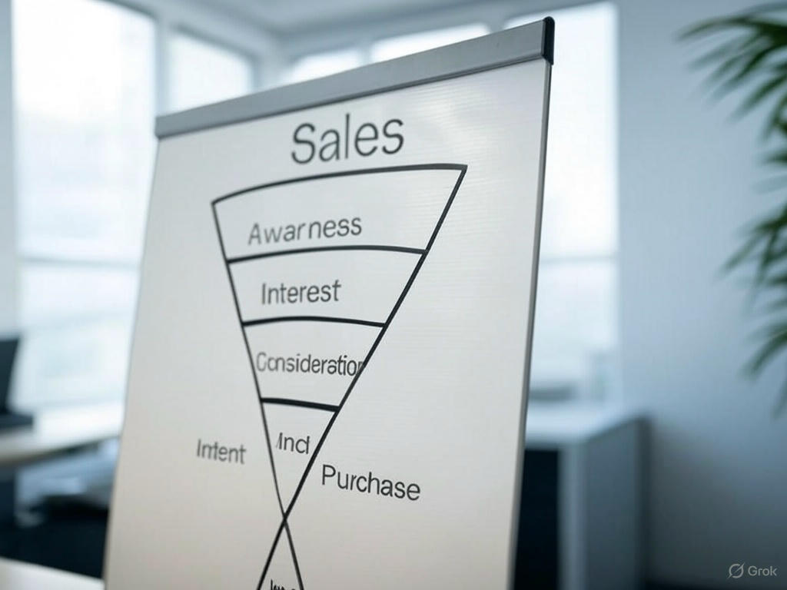

Importancia del Funnel de Ventas
El funnel de ventas, también conocido como embudo de conversión, es una herramienta estratégica esencial para cualquier negocio que busque optimizar sus procesos de marketing y ventas. Su importancia radica en varios aspectos clave...
Importancia del Funnel de Ventas
- 1. Visualización del Proceso de Compra El funnel permite a las empresas entender cómo los clientes pasan por diferentes etapas: desde la conciencia inicial (Awareness) hasta la decisión de compra (Purchase). Esto ayuda a identificar dónde se pierden oportunidades y cómo mejorar cada paso.
- 2. Optimización de Recursos Al analizar cada etapa del funnel, las empresas pueden asignar mejor sus recursos, enfocándose en las áreas que generan mayor conversión. Esto reduce desperdicios y aumenta la eficiencia.
- 3. Mejora de la Experiencia del Cliente Comprender las necesidades y comportamientos en cada fase permite personalizar las estrategias, ofreciendo contenido relevante que guíe al cliente de manera natural hacia la compra.
- 4. Incremento de Conversiones Un funnel bien diseñado y monitoreado asegura que más prospectos se conviertan en clientes. Al cerrar las brechas en el proceso, se maximiza el retorno de inversión (ROI).
- 5. Base para Estrategias de Marketing El funnel proporciona datos valiosos para segmentar audiencias, crear campañas específicas y medir el éxito de las iniciativas de marketing, adaptándolas en tiempo real. En conclusión, implementar y optimizar un funnel de ventas no solo mejora los resultados económicos, sino que también fortalece la relación con los clientes, convirtiéndose en un pilar fundamental para el crecimiento sostenible de cualquier negocio.